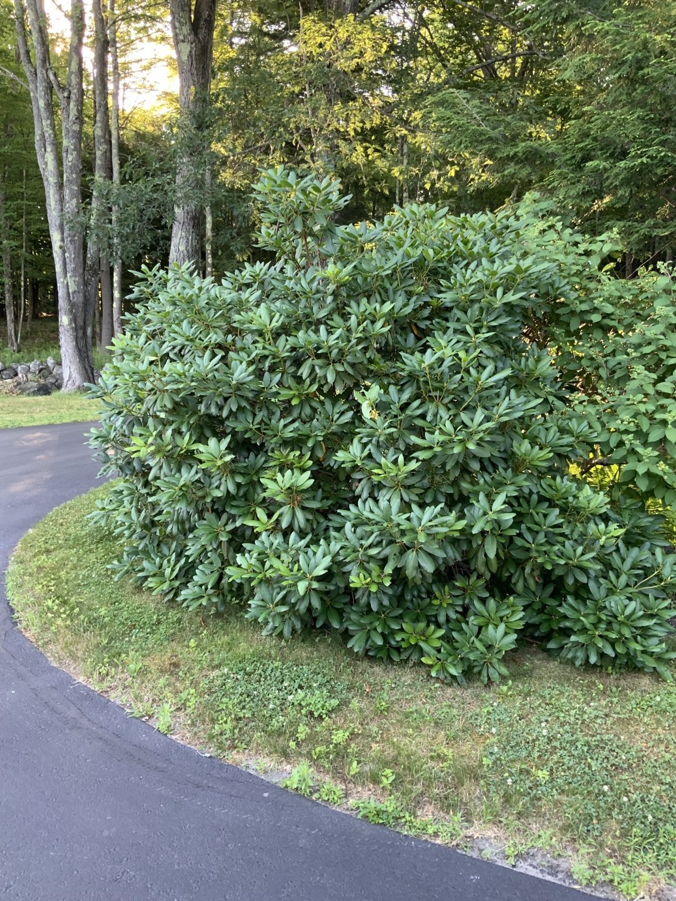

Light
Part shade or filtered sun
Rhododendron species · High-confidence identification


A large broadleaf evergreen growing near the driveway and woodland garden.
Part shade or filtered sun
Even moisture without soggy soil
Acidic, organic, well-drained soil
Acid-loving plant fertilizer only when needed
Prune immediately after flowering; remove dead stems anytime.
Lace bugs, root rot, winter burn